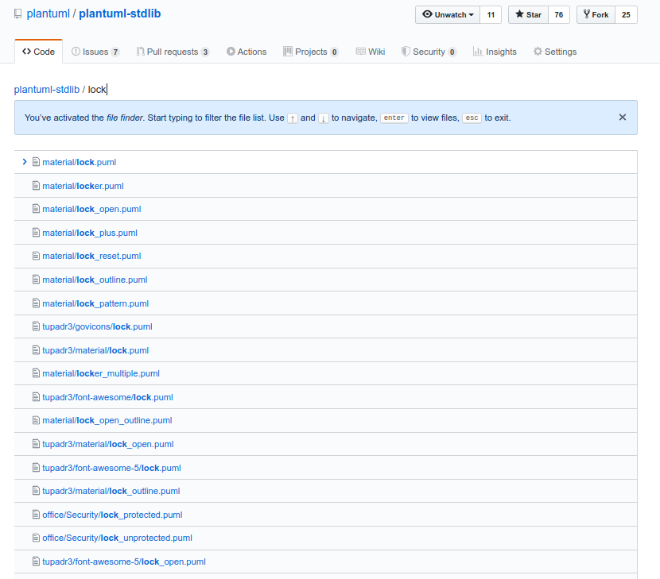

1. GitHub File Finder¶
Tip
Use GitHub File Finder to search for an icon quickly - directly from GitHub:
Browse to the PlantUML Standard Library repo https://github.com/plantuml/plantuml-stdlib
Press the
`t`key to enter GitHub File Finder modeType e.g. “lock”, “key”, “user”… or whatever you want to search for
The list of files/icons filenames that contain that text are shown
